選琴、保養與實務應用
第 21 章・建議學習 1.5 小時
Buying, Evaluating, Preserving and Using the Mandolin（選購、評估、保存與使用曼陀林）
本章重點
- 看琴的順序是：先看結構，再看功能，再看耗材，最後才看美觀。
- 便宜的琴不一定划算，貴的琴也不保證狀態好。真正要比的是「總成本」。
- 弦距很高、琴橋卻已經降到底，這是警訊，不是調整問題。
- 台灣最常見的保存風險是「太濕」，不是太乾。
- 判斷「能不能自己動手」的標準只有一個：做壞了，可不可以復原。
21.0 這一章要解決什麼問題
讀完整本書，最後還是會回到一個很實際的場景。
眼前有一把琴。你要決定：它適不適合我？狀態好不好？價格合理嗎？該怎麼保存？哪些問題我能自己處理？哪些一定要交給製琴師？
要回答這些，得把前面章節的結構、木材、設定、聲學和型號資料全部綜合起來。
本章採用「風險導向」：先判斷會不會影響結構與能不能彈，再看可以更換的零件，最後才看裝飾與收藏性。
這個順序很重要。漂亮的紋路、閃亮的貝殼、好聽的故事，都很容易吸引人。
但它們會讓你忽略真正要緊的事：琴頸角度、面板變形、圓背木條開膠。
21.1 用途與選琴需求
先問：你要拿它做什麼？
| 你想玩的方向 | 優先考慮的特點 |
|---|---|
| 藍草即興合奏（bluegrass jam） | F 型／A 型雕刻面板、f 孔的響應、刷節奏（chop）、投射力（projection） |
| 古典曼陀林或曼陀林樂團 | 圓背傳統、顫音（tremolo）的響應、特定家族的音色 |
| 愛爾蘭／民謠 | 較直接的單音響應（single-note response） |
選琴要從用途開始，不是從品牌開始。
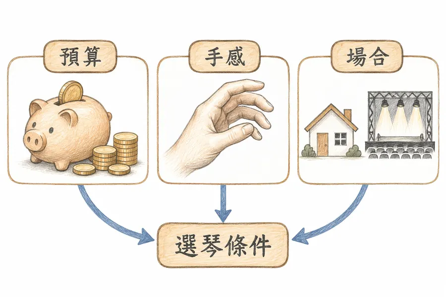
圖解 21.1 用途與選琴需求（示意）
第二個問題：手感
這幾項會直接決定你能彈多久：
- 琴枕寬度（nut width）
- 弦長（scale length）
- 指板弧度半徑（fingerboard radius）
- 琴頸形狀（neck profile）
- 弦距（action）
官方資料顯示，Eastman MD315 使用 13 7/8 吋弦長、1 3/32 吋琴枕、12 吋指板半徑。
Collings MF5 則是 13 7/8 吋弦長、1 1/8 吋琴枕，加上複合半徑（compound radius）。
這些毫米級的差異，對你手感的影響，可能比鑲邊華不華麗重要得多。〔S2101〕〔S2102〕
第三個問題：預算與品牌
入門琴如果設定良好，往往比高價琴但弦距過高更容易學。
升級的真正理由應該是：響應、音色、琴頸手感、動態範圍，或某種特定風格的需求。不是「這把比較貴」。
| 重點與應用 | 內容 |
|---|---|
| 核心概念 | 藍草合奏重 F／A 型雕刻面板、f 孔響應、chop 與投射力；古典重圓背傳統與顫音響應。 |
| 關係與條件 | 第二個問題是手感。 |
| 應用方向 | 選琴、鑑定與保養。 |
帶去店裡之前
第一把琴，先從「你想參加的音樂活動」選起。
要加入社團或樂團，就問老師用什麼琴型、什麼調弦、負責哪個聲部。想參加藍草合奏，就帶著熟悉的旋律和節奏去試琴。
島村樂器的指南，主要服務圓背曼陀林與曼陀拉的讀者。它的配件與售後服務提醒，也很適合放進選琴清單。〔N01〕
把預算分成四項：琴本身、琴盒、基本配件、檢查調整。
店家如果提供套裝，要逐項核對內容物與尺寸。購買前請店家寫清楚：交琴時會做哪些調整、保固條件、換弦與維修的聯絡方式。
網站上的日圓價位，適合用來理解「當時的產品分級」。部分比較價格標示為 2022 年 5 月，頁面也註記 SUZUKI 已生產完畢、Ena 停產及庫存狀態。
這些都是該通路頁面當時的資訊。實際價格、供貨與售後條件，請向購買地店家取得當次報價。〔N01〕
21.2 新琴檢查
先看琴頸對不對
拿到新琴，先看琴頸排列（neck alignment）。
從琴尾板（tailpiece）往琴頭（headstock）看：弦是不是大致沿著指板中央？琴橋有沒有歪？
接著檢查：琴衍末端（fret ends）、琴枕弦槽（nut slots）、弦鈕順暢度（tuner smoothness）、琴橋腳貼合度（bridge feet）、弦距。
即使原廠有明確規格，運輸、氣候和經銷商的設定，都可能讓實際狀態不一樣。
再逐格聽有沒有雜音
每一個琴格都要試音，聽有沒有打弦雜音（buzz），特別是第 1–5 格、第 12 格以上，以及高音 E 弦組。
| 症狀 | 可能原因 |
|---|---|
| 只有某一格有雜音 | 局部琴衍過高或過低 |
| 整片低把位都有雜音 | 琴枕或琴頸彎度（relief）的問題 |
不要立刻去轉桁架桿（truss rod）。 先判斷問題的分布，再決定怎麼處理。
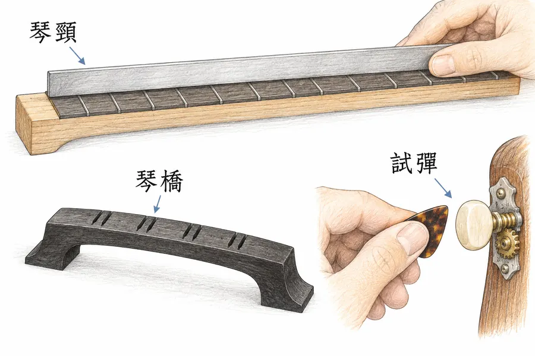
圖解 21.2 琴頸與琴橋檢查的局部示意（示意）
最後檢查音準
音準（intonation）要等新弦穩定後再檢查。
第 12 格的泛音（harmonic）和按下的音，可以做快速基準。
浮動琴橋如果位置錯了，整把琴會系統性地偏高或偏低。
這些都是低成本就能調整的問題，要和結構缺陷分開來看。
| 重點與應用 | 內容 |
|---|---|
| 核心概念 | 先看琴頸排列：從琴尾板往琴頭看，弦是否沿指板中央、琴橋是否歪斜。 |
| 關係與條件 | 逐格檢查雜音，特別是第 1–5 格、第 12 格以上與高 E 弦組。 |
| 應用方向 | 選琴、鑑定與保養。 |
第一次試琴的固定流程
不知道從哪裡開始？照這個順序做：
- 坐穩，調音。
- 依序彈四組空弦。
- 彈第 1 到第 5 格。
- 試一段慢旋律。
- 用「輕」和「強」兩種音量各彈一次。
請老師或店家示範同一段旋律，接著自己重彈。
然後記下三件事：按弦省不省力？音高穩不穩定？聲音清不清楚？
這是本書設計的試琴練習，可以直接帶到現場用。
常見誤解：「絃距太高，轉一下桁架桿就好」
桁架桿只處理琴頸彎度。
如果問題出在琴頸角度或琴體變形，硬轉只會讓情況更複雜。
21.3 中古琴初步檢查
老琴要看三層。順序不能顛倒。
第一層：整體結構（第一分鐘）
| 看什麼 | 可能代表什麼 |
|---|---|
| 琴頸是否明顯扭轉 | 結構或儲存問題 |
| 面板是否下陷或鼓起 | 張力或濕度問題 |
| 圓背是否有木條分離 | 膠合老化 |
| 琴頸與琴身接合處（neck/body joint） | 接合鬆動 |
| 琴橋高度是否已調到極端 | 琴頸角度不足 |
| 指板延伸段（fingerboard extension）是否異常貼近面板 | 琴體變形 |
第二層：裂縫與開膠
木材裂縫（crack）通常會穿過木纖維。漆面龜裂（finish checking）可能只停在漆面。
用斜光觀察、輕敲周邊，可以找出開縫（open seam）。但不要用力扭琴體去「測試」。
圓背琴要一條一條看木條和隔片（spacers），特別是琴尾塊（tailblock）和琴頸塊（neck block）附近。
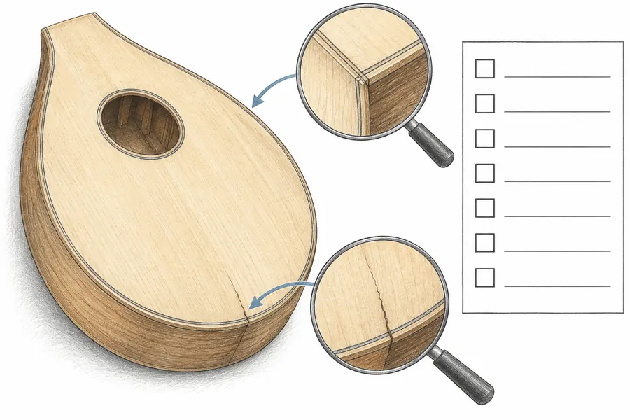
圖解 21.3 中古琴初步檢查（示意）
第三層：零件
看琴衍、琴枕、弦鈕、琴橋、琴尾板和弦。
這些多屬於耗材或可維修零件，應該估進成本，但通常不等於「結構報廢」。
最後才看刮痕、漆面磨損、裝飾缺失。
常見誤解：「表面刮痕多，這把琴就很糟」
刮痕是最後才看的事。
一把刮痕很多但結構穩的琴，風險可能遠低於一把外觀漂亮但琴頸角度有問題的琴。
21.4 琴頸角度與琴橋高度
浮動琴橋可以提供一定的高度調整，但範圍有限。
狀況一：弦距很高，琴橋卻已經降到幾乎最低。
這可能表示琴頸角度不足、面板幾何改變，或指板平面有問題。
狀況二：弦距很低，琴橋已升到很高，還是打弦。
這也可能有其他結構因素。
判斷琴頸角度，可以拿直尺沿琴衍延伸，看它大致落在琴橋的哪個高度。
這不是單一的毫米公式，不同琴型不一樣。重點是：琴橋還有沒有合理的調整餘量。
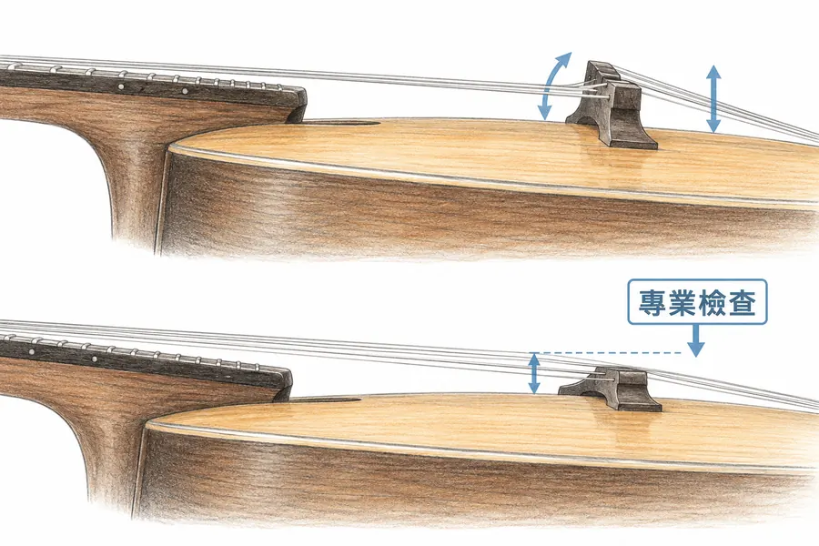
圖解 21.4 琴頸角度與琴橋高度（示意）
琴頸重設（neck reset）屬於高風險工作。不要因為網路影片看起來簡單就自己試。
老琴的膠、接合、漆面和裝飾，都可能因為拆琴頸而受損。應該由熟悉該琴型的製琴師評估。
| 重點與應用 | 內容 |
|---|---|
| 核心概念 | 浮動琴橋有高度調整空間，但範圍有限。 |
| 關係與條件 | 判斷琴頸角度可用直尺沿琴衍延伸，看它落在琴橋哪個高度。 |
| 應用方向 | 選琴、鑑定與保養。 |
21.5 裂縫、開膠與結構變形
裂縫有大小之分
小型的乾燥裂縫，如果及早修復，可能只是常規維修。
長裂縫穿過琴橋區域、音梁（bracing）脫離，或面板下陷，就複雜得多。
圓背琴的木條分離也有程度差異：一小段開縫，和多條木條大面積移位，工時完全不同。
漆面龜裂本身不一定危險，尤其是老琴上的硝基漆（nitrocellulose lacquer）。真正要問的是：木材是不是也裂開了。
用手機手電筒斜照，常能看出裂縫兩側有沒有高度差。但正式購買高價琴，仍應由專業者檢查。
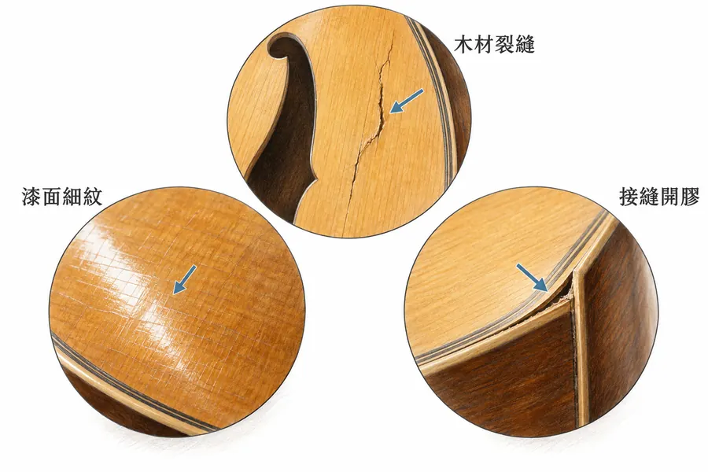
圖解 21.5 裂縫 開膠與結構變形（示意）
修復痕跡不等於壞事
一把百年的琴完全沒有修復過，反而罕見。
好的修復可以維持結構與演奏性。真正影響收藏價值的是：修復品質、是否過度改動、原裝零件保留程度，以及來源履歷。
| 重點與應用 | 內容 |
|---|---|
| 核心概念 | 小型乾燥裂縫若及早修復，可能是常規維修。 |
| 關係與條件 | 漆面龜裂本身不一定危險，尤其老硝基漆。 |
| 應用方向 | 選琴、鑑定與保養。 |
常見誤解：「有修過＝不值錢」
完全沒修過的老琴反而少見。
要看的是「修得好不好」、「有沒有過度改動」、「原裝零件留了多少」。
21.6 標籤、序號與真偽
標籤（label）可以被更換、偽造，也可能是真標籤貼在錯的琴上。
鑑定要同時看這些線索：
| 類別 | 具體項目 |
|---|---|
| 結構 | 構造方式、內部支撐 |
| 材料 | 木材種類與年代特徵 |
| 尺寸 | 各部分實際測量值 |
| 外型 | 琴頭形狀、鑲邊與鑲嵌（binding／inlay） |
| 五金 | 弦鈕、琴橋、琴尾板 |
| 製作痕跡 | 工具留下的刀痕 |
| 老化 | 漆面老化方式 |
| 履歷 | 來源（provenance） |
對知名製琴師的高價琴，最好比對館藏與型錄。不要用 Google 圖片看起來很像就下結論。
序號系統也可能跨年代變動。某些品牌資料完整，某些幾乎沒有。
即使序號落在合理範圍，也只能證明「看起來一致」，不能單獨證明所有零件都是原裝。
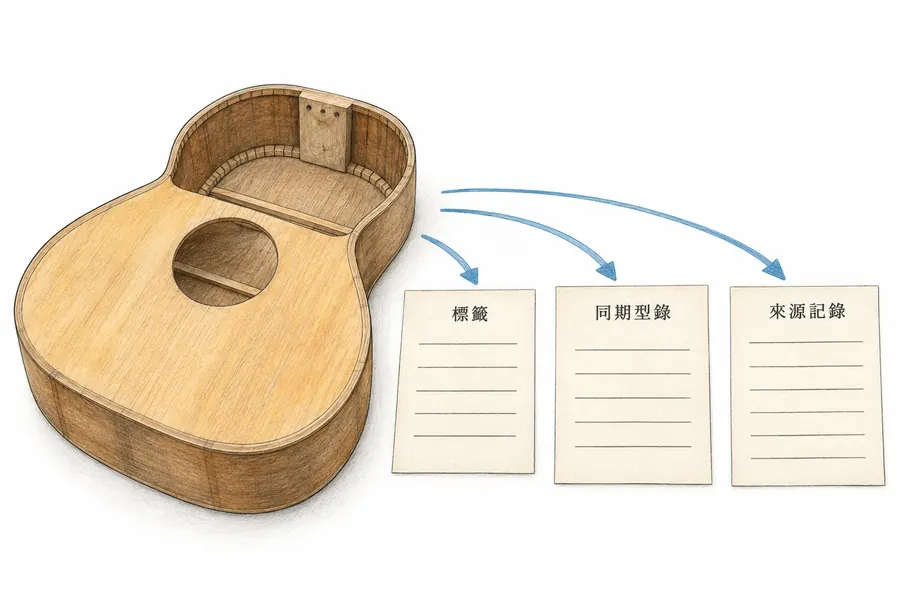
圖解 21.6 標籤 序號與真偽（示意）
購買時應該保存這些照片：標籤、序號、整琴正反面、琴頭、琴橋、琴尾板、內部或圓背、修復處。
還要保留發票與賣家的書面說明。這些未來都可能成為來源履歷的一部分。
| 重點與應用 | 內容 |
|---|---|
| 核心概念 | 標籤可以被更換、偽造，也可能是真標籤貼在錯琴上。 |
| 關係與條件 | 序號系統也可能跨年代變動，某些品牌資料完整，某些幾乎沒有。 |
| 應用方向 | 選琴、鑑定與保養。 |
21.7 收藏價值與演奏價值
這兩件事常被混在一起，但它們不是同一回事。
例子一： 一把原裝度很高的稀有古琴，可能因為琴頸角度不佳、結構脆弱，不適合頻繁演出。
例子二： 一把換過琴橋和琴衍、經專業整備的琴，收藏性稍低，但演奏性極佳。
買家應該先決定：我在意的是哪一軸？
| 收藏市場重視 | 演奏者重視 |
|---|---|
| 製琴師（maker） | 響應（response） |
| 型號稀有度 | 音準（intonation） |
| 歷史意義 | 琴頸手感 |
| 原漆與原裝五金 | 可靠度 |
| 品況 | 動態範圍 |
| 來源履歷 | 音量與投射力 |
兩者有交集，但不是同義詞。
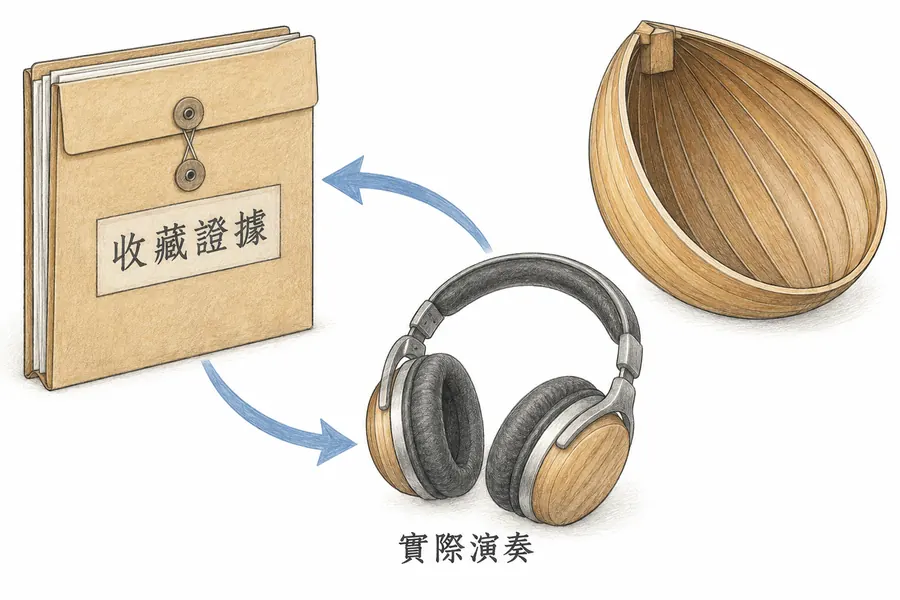
圖解 21.7 收藏價值與演奏價值（示意）
不要因為「古」就自動加分
大量生產的學生款（student model），即使上百年，市場上也可能供應很多。
反過來，某些短期生產的職業款（professional model），因為存量少，收藏需求反而更高。
第 20 章的資料庫可以當型號背景，但實際估價仍然需要當期的成交資料。
| 重點與應用 | 內容 |
|---|---|
| 核心概念 | 原裝度很高的稀有古琴，可能因琴頸角度與結構脆弱，不適合頻繁演出。 |
| 關係與條件 | 收藏市場重視製琴師、稀有度、歷史意義、原漆原裝、品況、來源履歷。 |
| 應用方向 | 選琴、鑑定與保養。 |
常見誤解：「越老越值錢」
一把 1920 年代的學生琴，可能比一把 1990 年代的職業琴更便宜。
稀有度和需求，比年份重要。
21.8 浮動琴橋與換弦
換弦最常犯的錯
如果你一次把所有弦拆掉，浮動琴橋就會失去弦張力的固定而移位。
對熟悉設定的人來說，這不是災難。但初學者最好一組一組換，讓琴橋大致留在原位。
如果真的要全拆弦來清潔指板，應該先用低黏性的定位標記，或量好琴橋位置。這樣重裝後音準才不會跑掉。
換弦的幾個要點
- 同一弦組的兩條弦，最好一起換，然後逐條調音。
- 新弦剛裝上會拉伸，需要重新調音好幾次。
- 換成不同粗細（gauge）或材質後，張力會改變，可能需要重新檢查弦距、琴頸彎度與音準。
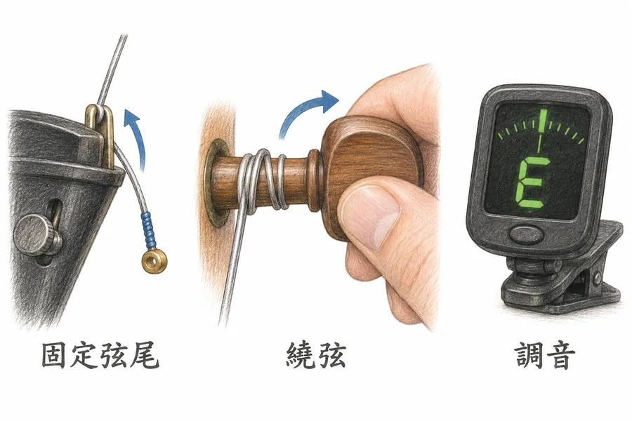
圖解 21.8 浮動琴橋與換弦（示意）
琴尾板有銳邊、弦鈕孔位、弦尾固定方式，各品牌都不同。換弦前先觀察舊弦是怎麼走的。
不要用暴力把弦環（loop）拉進錯的槽。
| 重點與應用 | 內容 |
|---|---|
| 核心概念 | 一次拆掉所有弦，浮動琴橋會失去固定而移動。 |
| 關係與條件 | 同一弦組的兩條弦最好一起換，並逐條調音。 |
| 應用方向 | 選琴、鑑定與保養。 |
常見誤解：「換弦就是把舊的拆光，再裝新的」
對浮動琴橋的樂器，這個做法會讓琴橋位置跑掉。
一組一組換，才是安全做法。
21.9 清潔與保養
日常清潔
最安全的方法：用柔軟的乾布，先擦掉汗和灰塵。
對老琴或不清楚漆面種類的琴，不要直接用含矽（silicone）、強溶劑或磨料的拋光劑。
蟲膠漆（shellac）、硝基漆（nitrocellulose lacquer）、凡尼斯（varnish）對化學品的反應都不同。某些老漆面可能已經脆化。
指板要不要上油？
要看木材、乾燥程度和產品配方。
黑檀（ebony）與玫瑰木（rosewood）這類沒有上漆的指板，偶爾可以用極少量適合樂器的保養油（conditioner）。
但過量的油不會「餵木頭」。它反而可能滲進琴衍槽，或吸附灰塵。
上漆的楓木指板，又是另一套處理方式。
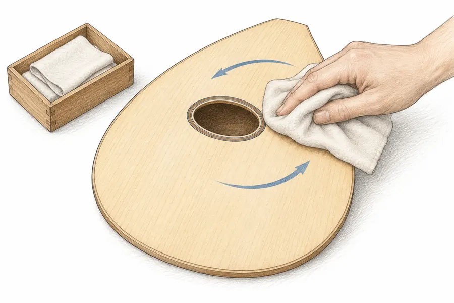
圖解 21.9 清潔與保養（示意）
金屬硬體氧化，可以先用乾布處理。
高價古琴上做強力拋光，可能直接降低原來的自然光澤（patina）和收藏價值。
收藏品的「變亮」，不一定是改善。
| 重點與應用 | 內容 |
|---|---|
| 核心概念 | 日常清潔以柔軟乾布先去汗和灰塵最安全。 |
| 關係與條件 | 指板是否上油，要看木材、乾燥程度與產品配方。 |
| 應用方向 | 選琴、鑑定與保養。 |
建立習慣
日常照護從三件事開始：演奏後擦掉汗漬、把琴放回合適的琴盒、觀察環境。
清潔劑、指板油與濕度用品的用量和頻率，要依漆面、指板材質和製琴師的指示安排。
保養紀錄可以註明日期、用品與使用位置，方便下次檢查。
21.10 濕度與溫度
為什麼濕度這麼重要
木材會隨著環境的相對濕度（RH）改變含水率，造成尺寸變化、裂縫、接縫開膠或面板變形。
常見的樂器保養建議，多把 40–55% RH 視為保守範圍。但不同材料、製法和歷史狀態都有差異。
真正重要的不是「某個完美數字」，而是避免長期極乾、極濕與快速波動。
美國國會圖書館（Library of Congress）對紙本保存的資料也指出兩個方向。
高於 60% RH 會增加變形與發霉的風險。低於約 30%，也可能因收縮產生問題。
書本不是樂器。但這仍說明有機材料對濕度極端值與波動很敏感。〔S2103〕
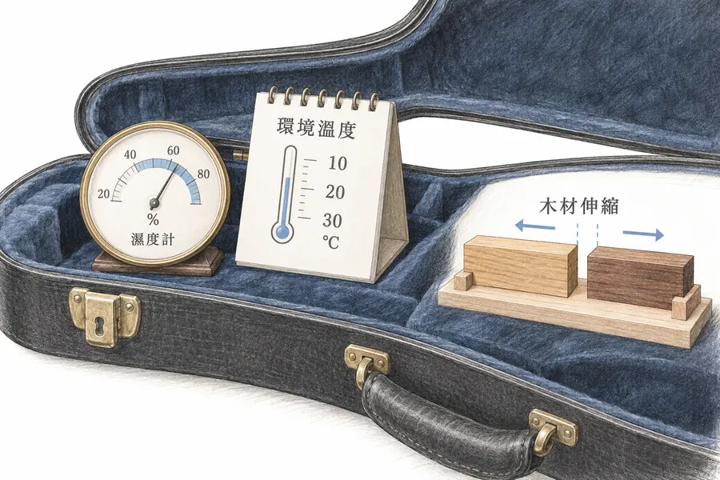
圖解 21.10 濕度與溫度（示意）
台灣的實際情況
台灣環境常見高濕。真正的風險，可能反而是琴盒內長期維持 70–80% RH，導致發霉與金屬腐蝕。
比起「在琴盒裡放一包不知道狀態的乾燥劑」，更可靠的做法是：
- 使用可靠的濕度計（hygrometer）
- 控制除濕空間
- 用適當的琴盒收納
| 重點與應用 | 內容 |
|---|---|
| 核心概念 | 木材會隨相對濕度改變含水率，造成尺寸變化、裂縫、開膠或面板變形。 |
| 關係與條件 | 國會圖書館對紙本保存也強調：高於 60% RH 增加變形與發霉風險，低於約 30% 也可能因收縮產生問題。 |
| 應用方向 | 選琴、鑑定與保養。 |
常見誤解：「台灣很濕，所以琴一定不會裂」
太濕會發霉、腐蝕金屬、讓木材吸濕變形。
而且琴從冷氣房搬到戶外，快速變化本身就是風險。
21.11 包裝與運輸
琴盒的作用
硬盒（hard case）的作用，是分散衝擊，並且避免琴體在盒內移動。
如果琴盒太大，琴在裡面晃動，外殼再硬也無法阻止二次撞擊。
如果琴頸支撐太高，或壓到琴頭，同樣有風險。
溫差
航空與冬季運輸還有溫差問題。
冷琴進入暖室後，不宜立刻打開。讓琴盒緩慢回溫，可以降低結露與漆面受衝擊的風險。
國際運輸則要確認木材、象牙、玳瑁等受管制材料。
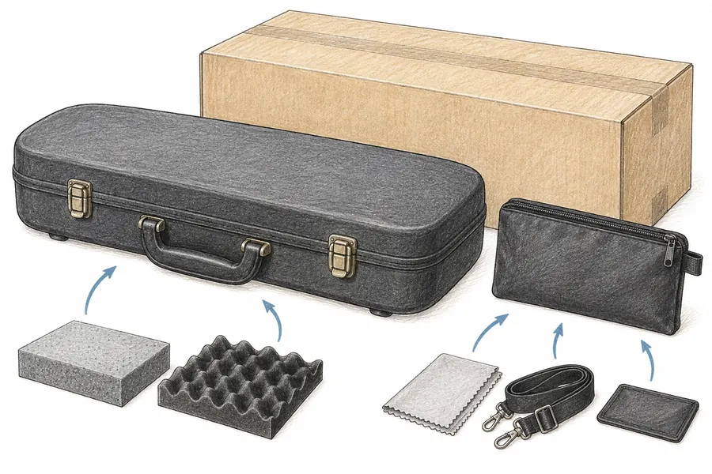
圖解 21.11 包裝與運輸（示意）
CITES（瀕危野生動植物國際貿易公約）的註釋 #15，對許多完成品的達爾伯格屬（Dalbergia，俗稱玫瑰木類）樂器有豁免。
但巴西玫瑰木（Brazilian rosewood，學名 Dalbergia nigra）等重要例外仍然存在。仍應逐項確認物種與適用條件。〔S2104〕
寄送高價琴
寄送前應拍照、記錄品況。
要鬆多少弦，得依琴型與承運方式判斷。並確保琴橋、琴頸、琴頭都有適當支撐。
過度鬆弦會讓浮動琴橋與琴尾板失去穩定，未必更安全。
| 重點與應用 | 內容 |
|---|---|
| 核心概念 | 硬盒的作用是分散衝擊，並避免琴體在盒內移動。 |
| 關係與條件 | 航空與冬季運輸還有溫差問題。 |
| 應用方向 | 選琴、鑑定與保養。 |
怎麼挑琴盒
把琴實際放進去確認：
- 琴體與琴頸是否受到穩定支撐？
- 盒蓋關閉時能不能自然扣上？
- 提把、背帶與總重量適不適合通勤？
保護性與尺寸貼合，比套裝件數更值得比較。
21.12 專業維修的時機
| 風險等級 | 項目 |
|---|---|
| 高風險，交給專業 | 琴頸重設、嚴重裂縫修復、面板變形、音梁／木條大面積開膠、熱處理（heat treatment）、指板刨平（fretboard planing）、結構性琴橋工程 |
| 低風險，可以自己來 | 正常換弦、清潔、基本調音、在理解方法後做小幅的琴橋位置與音準檢查 |
即使是桁架桿，如果你不知道這把琴有沒有、該往哪轉、結構狀態如何，也不應該硬轉。
尤其古老的圓背琴，內部操作空間有限。拆修可能牽涉多條木條和歷史膠合方式。
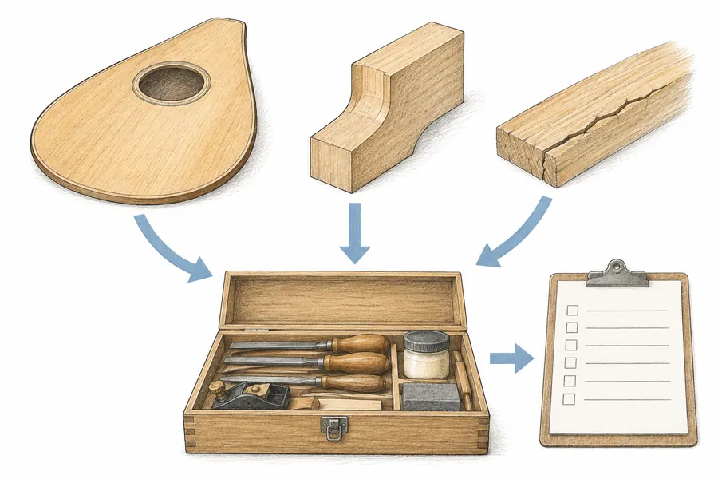
圖解 21.12 專業維修的時機（示意）
「自己修」的判斷標準只有一個：失敗可不可以復原。
如果一步做錯，可能破壞木材、漆面或原裝性，那就值得交給專業者。
| 重點與應用 | 內容 |
|---|---|
| 核心概念 | 琴頸重設、嚴重裂縫、面板變形、大面積開膠、熱處理、指板刨平、結構性琴橋工程都屬高風險。 |
| 關係與條件 | 低風險事項包括換弦、清潔、基本調音，以及理解方法後的小幅音準檢查。 |
| 應用方向 | 選琴、鑑定與保養。 |
21.13 拾音器與麥克風
三種收音方式，各有取捨。
| 類型 | 優點 | 缺點 |
|---|---|---|
| 壓電／接觸式拾音器（piezo／contact pickup） | 容易安裝在琴橋或面板上；抗回饋（feedback）較好 | 阻抗不匹配（impedance mismatch）會讓聲音尖薄，常需要高輸入阻抗的前級或 DI |
| 電磁式拾音器（magnetic pickup） | 聲音較像電樂器，音量穩定 | 需要鐵磁性（ferromagnetic）的弦；對琴身共鳴捕捉少 |
| 內部／外部麥克風（microphone） | 最自然 | 最容易回饋，也容易收到舞台雜音 |
混音系統（hybrid system） 把壓電與麥克風混合，是常見的折衷方案。
現場大音量的藍草樂團，可能偏向壓電或電磁式。安靜的室內舞台或錄音，可以提高麥克風的比例。
選拾音器前，先定義你的場景，會比先問「哪一套最好」有效得多。
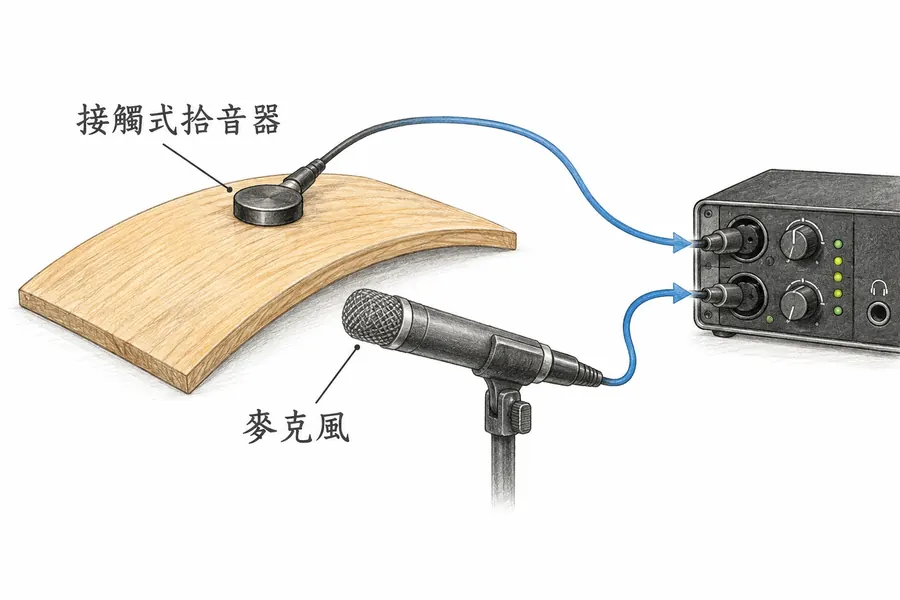
圖解 21.13 接觸拾音與麥克風收音的概念（示意）
安裝拾音器也可能改變琴橋質量或面板負載。
對收藏級古琴，不可逆的鑽孔要非常慎重。
| 重點與應用 | 內容 |
|---|---|
| 核心概念 | 壓電拾音器容易安裝、抗回饋較好，但阻抗不匹配會讓聲音尖薄。 |
| 關係與條件 | 電磁式拾音器需要鐵磁性弦，聲音較像電樂器，對琴身共鳴捕捉少。 |
| 應用方向 | 選琴、鑑定與保養。 |
21.14 DI 前級與舞台音控
為什麼需要前級
壓電拾音器如果接進不適合的低阻抗輸入，可能出現低頻不足、起音過硬的問題。
合適的前級或 DI（direct box，直接盒）可以提供：阻抗匹配、增益、等化（EQ），以及平衡輸出（balanced output）。
舞台上的順序是：先確定增益結構（gain staging），再處理 EQ。
不要用極端的 EQ 去補償錯誤的拾音器位置。
回饋怎麼處理
回饋（feedback）通常發生在琴體或空氣共振被 PA 系統再次放大的時候。
| 解法 | 說明 |
|---|---|
| 改變監聽喇叭位置 | 讓琴不要正對監聽 |
| 降低舞台音量 | 最根本的方法 |
| 陷波等化（notch EQ） | 針對特定頻率削減 |
| 改變拾音器與麥克風的比例 | 少用麥克風 |
| 音孔蓋或回饋抑制器 | 必要時使用 |
一直削低頻，可能讓曼陀林變得過薄。
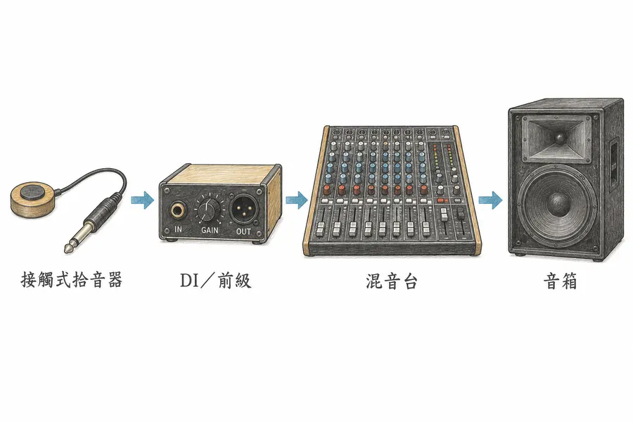
圖解 21.14 DI 前級與舞台音控（示意）
試音（soundcheck）要測三件事：最強的刷節奏（chop）、最密的顫音、最高把位。
這樣才能確認「實際演奏時」的音量與頻譜。真正演出時的峰值與頻譜，才會暴露問題。
| 重點與應用 | 內容 |
|---|---|
| 核心概念 | 壓電拾音器接進不適合的低阻抗輸入，可能低頻不足、起音過硬。 |
| 關係與條件 | 回饋通常發生在琴體或空氣共振被 PA 再放大時。 |
| 應用方向 | 選琴、鑑定與保養。 |
21.15 錄音與麥克風位置
麥克風的選擇
電容式麥克風（condenser microphone）常能捕捉曼陀林的瞬態（transient）與高頻細節。
動圈式麥克風（dynamic mic）在某些情境下，也能得到比較聚焦的聲音。
位置比型號更重要。
| 位置 | 常見結果 |
|---|---|
| 直接對音孔 | 容易低頻過重、箱音明顯（boomy／boxy） |
| 第 12 格附近 | 通常較平衡 |
| 琴橋與琴身交界 | 通常較平衡 |
但每把琴都不同，要以實際試聽為準。
距離與空間
近距離麥克風能降低房間的影響、增加細節。稍微拉遠，則能整合整個琴身的輻射。
立體錄音（stereo recording）可以用間隔對（spaced pair）、XY／ORTF 等技法，但相位與房間品質會變得更重要。
如果房間不好，一支位置正確的單聲道麥克風，通常比複雜的立體聲更可靠。
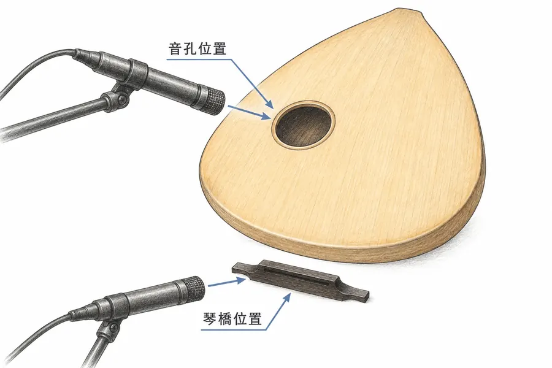
圖解 21.15 音孔與琴橋的部位定位；實際錄音使用完整樂器（示意）
錄音前要不要換新弦
要考慮兩件事：新弦的起音太亮，以及調音穩定性。
很多人會提前一兩天換弦，讓弦穩定下來。具體時間依弦的種類、演奏量與聲音偏好決定。
| 重點與應用 | 內容 |
|---|---|
| 核心概念 | 電容式麥克風常能捕捉曼陀林的瞬態與高頻細節。 |
| 關係與條件 | 近距離麥克風能降低房間影響、增加細節。 |
| 應用方向 | 選琴、鑑定與保養。 |
21.16 案例：中古琴的總成本
案例一：便宜，但很貴
一把老圓背琴，售價很低。但它的狀況是：
- 琴頸角度有問題
- 五條圓背木條開膠
- 琴衍磨平
- 弦鈕鬆動
- 琴橋非原裝
每一項單獨看都可以修。但總工時加起來，可能超過琴價好幾倍。
而且修好後的市場價，又未必等於你的總成本。
案例二：看起來糟，其實很好
另一把琴外觀刮痕很多。但它的狀況是：
- 琴頸與結構穩定
- 琴衍還可以用
- 琴橋與音準正常
只需要換新弦和做一次設定。
外觀比較差，實際上反而是風險更低的「可彈琴」（player instrument）。
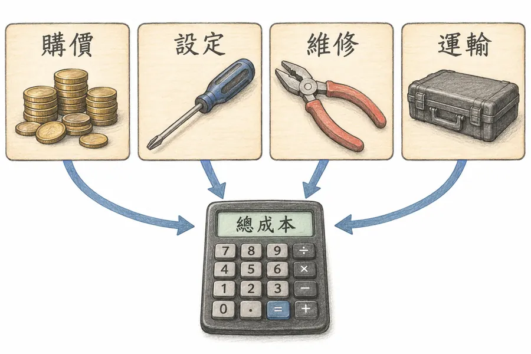
圖解 21.16 案例 中古琴的總成本（示意）
這就是中古琴評估的排序
- 結構
- 功能
- 耗材
- 美觀
便宜本身不是划算（bargain），昂貴也不是品況的保證。
| 重點與應用 | 內容 |
|---|---|
| 核心概念 | 售價很低的老圓背，若有琴頸角度、五條 ribs 開膠、琴衍磨平、弦鈕鬆、琴橋非原裝，總工時可能超過琴價數倍。 |
| 關係與條件 | 另一把刮痕多但結構穩、琴衍尚可、音準正常，只需換弦與設定，反而是低風險的演奏琴。 |
| 應用方向 | 選琴、鑑定與保養。 |
21.17 建立樂器檔案
每把琴建立一份檔案。要記的項目：
| 類別 | 內容 |
|---|---|
| 身分 | 品牌、型號、序號／標籤 |
| 交易 | 購買日期、價格、來源 |
| 影像 | 各角度照片 |
| 尺寸 | 弦長、琴枕寬、琴身尺寸 |
| 設定 | 弦組、弦距、琴頸彎度 |
| 維修 | 每次維修紀錄 |
| 環境 | 濕度與存放條件 |
這些資料幾年後會非常有價值。轉售、保險或維修時，都能提供歷史紀錄。
每次重大維修前後都要拍照，並保留發票。
如果換掉原裝的琴橋、琴尾板、弦鈕，舊零件也要保存並標記。
收藏價值有時候就取決於這些看起來不起眼的來源履歷。
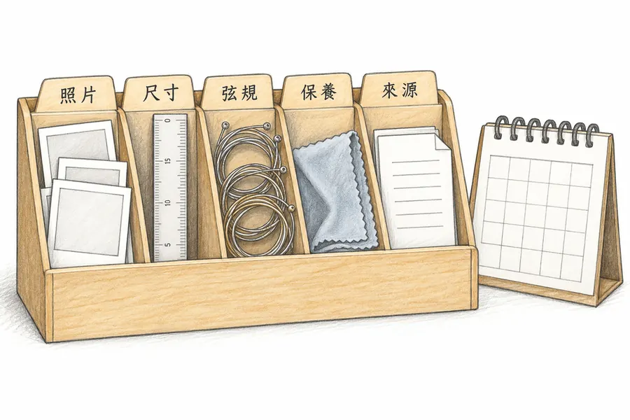
圖解 21.17 建立樂器檔案（示意）
真正的「專業保養」，重點是讓琴安全、穩定、可演奏，同時保存可追溯的歷史。
表 21-1｜中古琴症狀、風險與處理順序
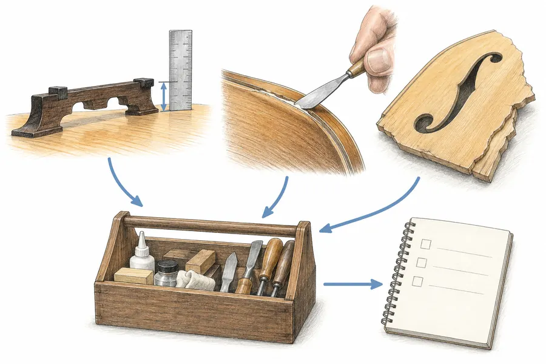
| 觀察 | 可能原因 | 風險層級 | 下一步 |
|---|---|---|---|
| 琴橋已降到底，弦距仍高 | 琴頸角度／琴體幾何 | 高 | 停止微調，請製琴師評估 |
| 多條圓背木條開膠 | 膠合老化／濕度／撞擊 | 高 | 避免加張力，也不要自行夾合 |
| 單一琴格打弦 | 局部琴衍過高或過低 | 中 | 先定位，再做琴衍處理 |
| 弦鈕澀或回差 | 齒輪磨耗／潤滑／鬆動 | 低–中 | 先確認固定與結構 |
| 弦舊、調音不穩 | 弦拉伸／磨耗 | 低 | 換整組並重新檢查音準 |
| 表面刮痕但結構穩 | 正常使用痕跡 | 低 | 除非收藏需求，通常不需修復 |
圖解 表 21-1｜中古琴症狀 風險與處理順序（示意）
自我學習題庫

學習檢查：作答、核對、複習
先自己作答，再看答案。答錯時回到本章相關小節重新讀一次。
1. 中古琴出現弦距很高但琴橋已很低，可能要注意？
-
A. 琴頸角度或琴體幾何
-
B. 琴盒顏色
-
C. 撥片材質
-
D. Logo 大小
2. 高價老琴的修復原則較適合？
-
A. 先評估可逆性與原裝性
-
B. 能換就全換
-
C. 先重噴漆
-
D. 只看外觀
3. 台灣高濕環境常見的保存風險包括？
-
A. 發霉、金屬腐蝕與木材吸濕變形
-
B. 只會過乾
-
C. 只有弦斷
-
D. 沒有影響
答案：1.A 2.A 3.A
本章主要查證來源

查證來源：找原文、核條件、留紀錄
【S2101】Eastman Guitars：MD315 official specifications。 弦長、琴枕寬、指板半徑、弦距等選琴手感參數案例。
https://www.eastmanguitars.com/md315
【S2102】Collings Guitars：MF5 official specifications。 弦長、琴枕寬、複合半徑等選琴案例。
https://collingsguitars.com/mandolins/mf5/
【S2103】Library of Congress：Preserving Your Books – relative humidity guidance (2026)。 有機材料保存對高濕、低濕與快速波動的保守原則；非樂器專屬數值。
https://guides.loc.gov/preserving-your-books
【S2104】CITES：Annotation #15 / reports on Dalbergia musical-instrument exemptions。 完成品樂器豁免與達爾伯格屬管制背景；D. nigra 等例外需個別確認。
https://cites.org/eng/app/appendices.php
把喜歡的聲音，變成學習的方向。
先聽出旋律與節奏，再觀察音色和演奏方法，最後選一個小目標帶回練習。